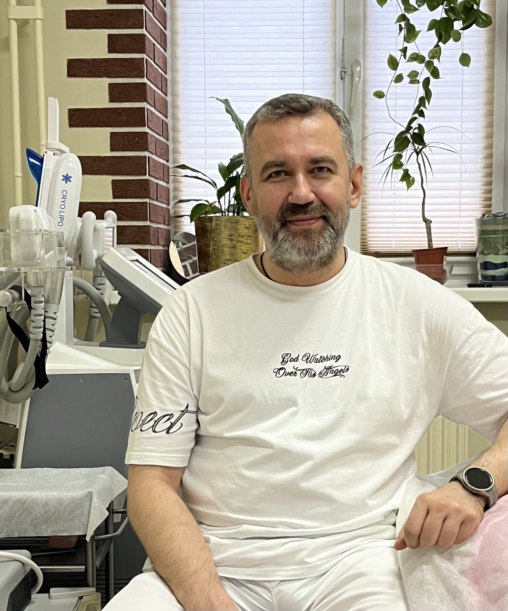

Бережная работа с телом как с единой системой
Помогает увидеть связи между зонами напряжения и вернуть естественную лёгкость и подвижность тела. Более 20 лет практики в восстановительной медицине.

Фото';">В чём суть методики и почему она работает иначе, чем обычный массаж
Мио-фасциальная практика основана на остеопатических техниках, отточенных в восстановительной медицине, спортивной практике и послеоперационной реабилитации (в том числе в пластической хирургии). Это работа с телом не по шаблону, а через глубокие телесные связи и поиск первопричин напряжения.
Обычный массаж
- Идёт по стандартной схеме — во многом одинаковой для всех
- Работает на поверхностном уровне: кожа, подкожные ткани, крупные мышцы
- Снимает симптом там, где тянет или болит, но не убирает исходную причину
- Эффект часто кратковременный — приходится регулярно возвращаться к сеансам
Мио-фасциальная практика
- Индивидуальный разбор под конкретное тело и его компенсации
- Глубокий уровень: фасции, глубокие мышцы, диафрагмы, положение костных структур
- Поиск и снятие первопричины, из-за которой закрепляется напряжение и боли в теле
- Устойчивый результат за счёт восстановления баланса тканей и движений тела. Достаточно одного курса, чтобы не только снять напряжение, но и почувствовать совсем иное качество своего движения.
Опыт и путь в практике
Медицинское образование и более 20 лет работы с телом. Начинал с реабилитации в нейрохирургии, постепенно пришёл к собственной практике, где соединил остеопатические подходы и накопленный опыт.
Нейрохирургия и реабилитация
Начинал в нейрохирургическом отделении. Хорошо знаю изнутри, как восстанавливается тело после травм, операций и длительного напряжения.
Спорт высоких достижений
Работал с пауэрлифтерами и баскетболистами. Понимаю, как тело переносит серьёзные нагрузки, перегрузки и восстановление.
Пластическая хирургия
Большой опыт работы с пациентами после пластических операций: восстановление мягких тканей, отёки, лимфоток и рубцы.
Остеокоррекция и обучение
Осваивал остеопластику у Виталия Ким, в работе опираюсь на принципы биодинамики.
Стоимость, как проходит встреча, что важно знать
Индивидуальный сеанс мио-фасциальной практики
8 000 ₽ / час
Первая встреча включает диагностику всего тела и составление персонального плана курса
Как проходит встреча
- ✓ Первая встреча — это диагностика, выстраивание индивидуального курса и персональные рекомендации.
- ✓ Приём проходит в уютном кабинете на массажном столе.
- ✓ Во время сеанса специалист может попросить вас встать или подвигаться — это нормально и помогает увидеть, как тело откликается в движении.
Что важно знать
- • Лучше прийти чуть заранее, чтобы спокойно настроиться и войти в сеанс без спешки.
- • Специалист работает со структурами тела во всём объёме, а не только поверхностно.
- • После сеанса тело продолжает выравниваться — внутренние процессы восстановления идут и дальше, поэтому важно проходить курс без пропусков и полностью.
- • Каждый сеанс даже внутри одного курса уникален и строится индивидуально под текущее состояние тела.
- • Результат курса — лёгкость и баланс в теле.
Истории клиентов
Екатерина, 37 лет

Беспокоило: Чувство скованности, тяжести в плечах и шее, сутулость.
Диагностика: Выявили паттерн «компьютерной шеи» — голова ушла вперёд, плечи завернулись вперёд и вверх, грудные мышцы спазмировались, а перегруженные мышцы шеи и плеч сформировали так называемый «вдовий горбик».
Результат после курса: Тело выровнялось, плечи развернулись, горбика как не бывало и шея встала на место. За счёт того, что встали на место мышцы (в том числе лица и платизма) и наладился лимфоток, лицо подтянулось и ушли отёки.
Мария, 32 года
Беспокоило: Слабость мышц тазового дна, подтекание мочи при кашле и чихании (упражнения Кегеля не улучшали ситуацию), тяжесть в ногах и отёки.
Диагностика: Перекос костей таза, из-за чего возросло давление внутренних органов на переднюю стенку живота и мочевой пузырь, отёки в ногах были связаны с перегрузкой передней поверхности бедра, где напряжённые мышцы пережимали лимфоток.
Результат после курса: Вернули таз в правильное положение и постепенно вывели миофасциальную систему в норму. Внутренние органы заняли своё место, живот подтянулся, давление на мочевой пузырь ушло, мышцы тазового дна пришли в тонус, а подтекание прекратилось. По словам самой Марии, она снова почувствовала радость в жизни и удовольствие от движения.
Василий, 40 лет
Беспокоило: Сильное напряжение в спине и шее, которое не уходило даже к вечеру, и плохой сон — не получалось нормально расслабиться и восстановить силы за ночь.
Диагностика: Накопленные напряжения в мышцах и фасциях из-за стресса удерживали спину и шейно-грудной отдел в постоянном защитном тонусе, поэтому тело не могло спокойно «выдохнуть» и перейти в глубокий отдых.
Результат после курса: Поэтапно сняли напряжения в тканях и выровняли телесные зажимы. Ушла скованность в спине и шее, в теле появилась лёгкость, а сон нормализовался — по словам Василия, он наконец стал по-настоящему высыпаться и почувствовал себя намного бодрее.